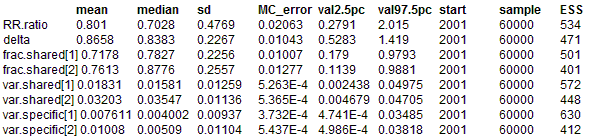
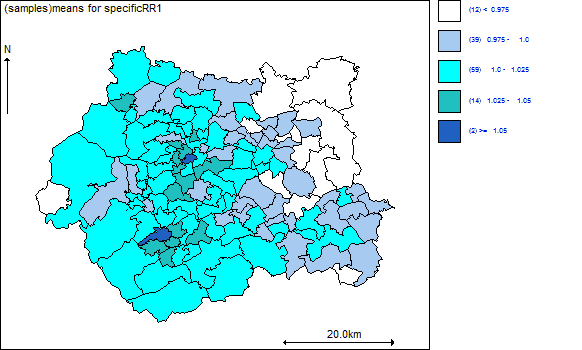
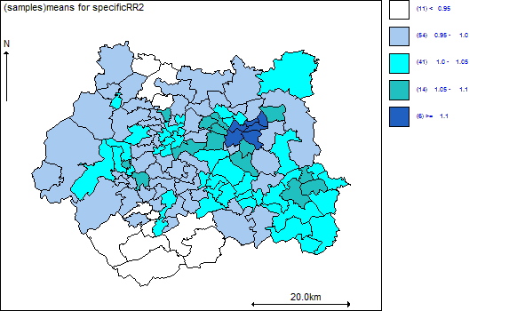
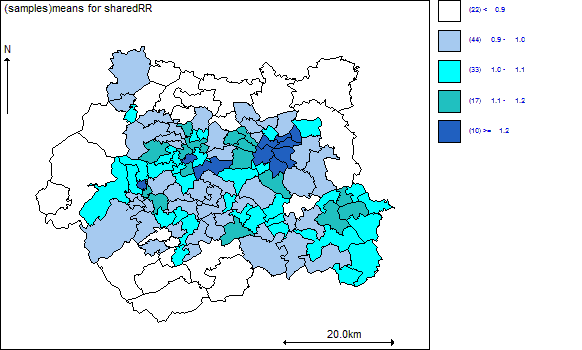

Shared component model for mapping multiple diseases: Oral cavity cancer and lung caner in West Yorkshire, UK
Knorr-Held and Best (2001) analysed data on mortality from oral cavity and oesophageal cancer in Germany using a shared component model. This model is similar in spirit to conventional factor analysis, and partitions the geographical variation in two diseases into a common (shared) component (
φ), and two disease-specific (residual) components (
ψ1 and
ψ2). Making the rare disease assumption, the likelihood for each disease is assumed to be independent Poisson, conditional on an unknown mean
μik Y
ik ~ Poisson(
μik)
log
μi1 = log E
i1 +
α1 +
φi*δ +
ψi1 log
μi2 = log E
i2 +
α2 +
φi /
δ +
ψi2where Y
ik and E
ik are the observed and age/sex standardised expected counts for cancer k in area i respectively,
αk is an intercept term representing the baseline (log) relative risk of cancer k across the study region, and
δ is a scaling factor to allow the risk gradient associated with the shared component to be different for each disease (this is in some sense similar to the factor loadings in conventional factor analysis - see Knorr-Held and Best (2001) for more details). Each of the three components (
φ,
ψ1 and
ψ2) is assumed to be spatially structured with zero mean; the components are assumed to be independent of each other. Knorr-Held and Best (2001) used a spatial partition model as a prior for each component. In this example, we fit a similar model, but assume an BYM convolution prior for each component. Here we re-consider the data on incidence of oral cavity cancer and lung cancer in 126 electoral wards in the West Yorkshire region of England:
model {
# Likelihood
for (i in 1 : Nareas) {
for (k in 1 : Ndiseases) {
Y[i, k] ~ dpois(mu[i, k])
log(mu[i, k]) <- log(E[i, k]) + alpha[k] + eta[i, k]
}
}
for(i in 1:Nareas) {
# Define log relative risk in terms of disease-specific (psi) and shared (phi)
# random effects
# changed order of k and i index for psi (needed because car.normal assumes
# right hand index is areas)
eta[i, 1] <- phi[i] * delta + psi[1, i]
eta[i, 2] <- phi[i] / delta + psi[2, i]
}
# Spatial priors (BYM) for the disease-specific random effects
for (k in 1 : Ndiseases) {
for (i in 1 : Nareas) {
# convolution prior = sum of unstructured and spatial effects
psi[k, i] <- U.sp[k, i] + S.sp[k, i]
# unstructured disease-specific random effects
U.sp[k, i] ~ dnorm(0, tau.unstr[k])
}
# spatial disease-specific effects
S.sp[k,1 : Nareas] ~ car.normal(adj[], weights[], num[], tau.spatial[k])
}
# Spatial priors (BYM) for the shared random effects
for (i in 1:Nareas) {
# convolution prior = sum of unstructured and spatial effects
phi[i] <- U.sh[i] + S.sh[i]
# unstructured shared random effects
U.sh[i] ~ dnorm(0, omega.unstr)
}
# spatial shared random effects
S.sh[1:Nareas] ~ car.normal(adj[], weights[], num[], omega.spatial)
for (k in 1:sumNumNeigh) {
weights[k] <- 1
}
# Other priors
for (k in 1:Ndiseases) {
alpha[k] ~ dflat()
tau.unstr[k] ~ dgamma(0.5, 0.0005)
tau.spatial[k] ~ dgamma(0.5, 0.0005)
}
omega.unstr ~ dgamma(0.5, 0.0005)
omega.spatial ~ dgamma(0.5, 0.0005)
# scaling factor for relative strength of shared component for each disease
logdelta ~ dnorm(0, 5.9)
# (prior assumes 95% probability that delta^2 is between 1/5 and 5;
delta <- exp(logdelta)
# lognormal assumption is invariant to which disease is labelled 1
# and which is labelled 2)
# ratio (relative risk of disease 1 associated with shared component) to
# (relative risk of disease 2 associated with shared component)
# - see Knorr-Held and Best (2001) for further details
RR.ratio <- pow(delta, 2)
# Relative risks and other summary quantities
# The GeoBUGS map tool can only map vectors, so need to create separate vector
# of quantities to be mapped, rather than an array (i.e. totalRR[i,k] won't work!)
for (i in 1 : Nareas) {
SMR1[i] <- Y[i,1] / E[i,1] # SMR for disease 1 (oral)
SMR2[i] <- Y[i,2] / E[i,2] # SMR for disease 2 (lung)
totalRR1[i] <- exp(eta[i,1]) # overall RR of disease 1 (oral) in area i
totalRR2[i] <- exp(eta[i,2]) # overall RR of disease 2 (lung) in area i
# residulal RR specific to disease 1 (oral cancer)
specificRR1[i]<- exp(psi[1,i])
# residulal RR specific to disease 2 (lung cancer)
specificRR2[i]<- exp(psi[2,i])
# shared component of risk common to both diseases
sharedRR[i] <- exp(phi[i])
# Note that this needs to be scaled by delta or 1/delta if the
# absolute magnitude of shared RR for each disease is of interest
logsharedRR1[i] <- phi[i] * delta
logsharedRR2[i] <- phi[i] /delta
}
# empirical variance of shared effects (scaled for disease 1)
var.shared[1] <- sd(logsharedRR1[])*sd(logsharedRR1[])
# empirical variance of shared effects (scaled for disease 2)
var.shared[2] <- sd(logsharedRR2[])*sd(logsharedRR2[])
# empirical variance of disease 1 specific effects
var.specific[1] <- sd(psi[1,])*sd(psi[1,])
# empirical variance of disease 2 specific effects
var.specific[2] <- sd(psi[2,])*sd(psi[2,])
# fraction of total variation in relative risks for each disease that is explained
# by the shared component
frac.shared[1] <- var.shared[1] / (var.shared[1] + var.specific[1])
frac.shared[2] <- var.shared[2] / (var.shared[2] + var.specific[2])
}
Data
list(Nareas=126, Ndiseases=2,
Y = structure(.Data = c(7, 103, 3, 160, 6, 97, 5, 156, 3, 88, 8, 168, 1, 88, 12, 157, 8, 110,
5, 134, 4, 74, 11, 162, 8, 136, 7, 81, 4, 108, 4, 100, 7, 137,
7, 130, 5, 176, 8, 182, 7, 161, 4, 86, 6, 169, 10, 154, 7, 121,
4, 247, 10, 179, 10, 219, 10, 88, 4, 108, 6, 211, 3, 107, 3, 120,
4, 70, 6, 216, 6, 221, 4, 142, 8, 136, 11, 246, 11, 209, 4, 130,
8, 90, 9, 117, 3, 121, 6, 157, 14, 300, 5, 160, 6, 107, 10, 233,
10, 270, 7, 141, 7, 110, 14, 158, 12, 203, 5, 74, 12, 149, 3, 98,
3, 110, 9, 151, 7, 157, 8, 111, 2, 84, 8, 149, 9, 166, 3, 205,
9, 114, 3, 68, 7, 115, 5, 179, 2, 101, 1, 73, 6, 109, 4, 118,
9, 73, 7, 108, 7, 98, 9, 137, 3, 79, 4, 126, 8, 134, 4, 108, 5,
119, 3, 144, 2, 89, 2, 103, 6, 99, 4, 74, 3, 75, 3, 90, 3, 69,
6, 137, 3, 129, 5, 122, 8, 114, 7, 115, 4, 73, 5, 94, 2, 110,
3, 69, 7, 94, 6, 133, 4, 120, 7, 112, 5, 118, 9, 129, 9, 128,
7, 91, 8, 141, 4, 93, 9, 107, 13, 85, 5, 81, 7, 98, 7, 85, 3,
89, 4, 82, 5, 98, 4, 127, 4, 105, 5, 119, 6, 133, 7, 82, 5, 73,
5, 77, 3, 109, 4, 80.), .Dim=c(126,2)),
E = structure(.Data = c(5.7993, 124.2824, 9.8345, 199.3086,
6.5001, 138.3337, 9.0741, 191.0307, 6.4746, 136.3728,
9.9171, 208.4544, 5.515, 113.2827, 9.8557, 205.0383, 5.7956, 118.5219, 8.299,
168.9939, 4.8596, 99.1749, 8.8737, 182.1041, 5.3387, 115.9417, 6.2182, 128.2199,
5.368, 111.3884, 5.4669, 115.3283, 8.3298, 172.3197, 8.5829, 176.3519, 8.0016,
172.5571, 9.8149, 217.5105, 6.8331, 137.3765, 5.4115, 111.0865, 5.6492, 119.7825,
8.7562, 178.6785, 6.3436, 132.6835, 7.8424, 165.7296, 7.9467, 163.6806, 8.2651,
179.5329, 4.9209, 99.8676, 4.8173, 97.8898, 8.2088, 172.8071, 5.1494, 111.4239,
6.1063, 125.3408, 4.2812, 89.5027, 7.439, 154.4872, 6.4687, 138.0246, 8.648,
173.9356, 5.4981, 112.8979, 8.1535, 172.1137, 8.1074, 167.9885, 5.0473, 103.0942,
5.337, 110.1, 4.9104, 95.0673, 4.899, 100.6339, 8.2719, 166.6911, 9.0572, 192.7174,
8.3271, 170.1211, 5.2504, 109.0334, 9.2167, 189.3181, 8.2078, 173.5003, 6.3403,
130.4997, 5.2363, 106.8044, 5.7656, 119.1885, 6.349, 134.6238, 3.1955, 63.4971,
4.8059, 96.6801, 4.3527, 92.6587, 5.6589, 113.8283, 7.3528, 158.2496, 6.4591,
134.9901, 5.0808, 103.3924, 3.6248, 73.217, 8.1897, 167.9081, 8.29, 167.5654,
7.3986, 153.8624, 6.3236, 127.4593, 4.261, 86.9421, 5.5404, 111.7691, 9.0518,
186.5931, 5.6972, 117.9196, 4.1577, 90.4632, 3.7059, 75.4029, 4.5956, 99.7396,
4.0921, 85.8003, 5.0072, 99.5433, 5.7554, 118.2132, 5.4192, 113.6951, 4.4614,
95.4255, 5.3266, 113.212, 5.9185, 120.4505, 5.0662, 99.3974, 5.5931, 113.8424,
4.7091, 100.6834, 5.7394, 118.5351, 5.4592, 110.8379, 5.6211, 113.0633, 4.2743,
91.6488, 4.2199, 87.8078, 5.0116, 106.9507, 3.9801, 84.0584, 5.2632, 107.4919,
5.1299, 103.2763, 5.5062, 114.7298, 5.684, 119.65, 5.033, 102.6666, 3.6625,
74.6299, 4.2702, 92.1799, 5.9149, 121.8377, 4.048, 84.8317, 5.8719, 121.1919,
6.6767, 141.6445, 5.3587, 110.0901, 5.4904, 111.204, 4.7363, 96.3014, 5.3231,
108.2957, 6.5753, 137.6387, 5.457, 111.0015, 5.8437, 120.9779, 5.2844, 106.7001,
5.0919, 101.9814, 6.5409, 135.9033, 5.3966, 106.1728, 5.1725, 102.7724, 6.066,
129.0506, 5.9403, 123.6225, 5.4443, 117.149, 5.5746, 115.9296, 5.4766, 113.8003,
5.3397, 108.0343, 5.8259, 124.6071, 5.7783, 125.2003, 6.0794, 127.5812, 5.6695,
116.8155, 5.5123, 114.1313, 5.1238, 104.6006, 5.46, 112.2663), .Dim=c(126,2)),
num = c(3, 2, 3, 6, 6, 5, 7, 5, 4, 9,
6, 5, 4, 6, 7, 6, 7, 8, 6, 5,
4, 8, 6, 8, 6, 5, 6, 7, 4, 4,
5, 4, 6, 4, 5, 7, 7, 10, 6, 5,
6, 4, 6, 3, 6, 8, 6, 5, 6, 6,
7, 5, 6, 5, 9, 8, 7, 6, 5, 5,
6, 5, 6, 6, 7, 8, 7, 6, 6, 6,
1, 3, 6, 5, 4, 4, 6, 6, 6, 5,
3, 5, 8, 8, 5, 7, 4, 6, 5, 9,
6, 5, 5, 6, 7, 4, 6, 5, 6, 5,
6, 6, 5, 7, 7, 6, 5, 5, 5, 7,
6, 6, 6, 6, 9, 7, 4, 4, 4, 4,
6, 5, 3, 5, 2, 4
),
adj = c(
9, 7, 3,
10, 4,
7, 5, 1,
20, 17, 12, 10, 6, 2,
16, 14, 8, 7, 6, 3,
18, 12, 8, 5, 4,
22, 16, 13, 9, 5, 3, 1,
18, 15, 14, 6, 5,
13, 11, 7, 1,
79, 77, 75, 45, 37, 21, 17, 4, 2,
57, 55, 34, 22, 13, 9,
20, 19, 18, 6, 4,
22, 11, 9, 7,
25, 23, 16, 15, 8, 5,
30, 29, 24, 23, 18, 14, 8,
25, 23, 22, 14, 7, 5,
35, 27, 26, 21, 20, 10, 4,
31, 28, 24, 19, 15, 12, 8, 6,
32, 28, 27, 20, 18, 12,
27, 19, 17, 12, 4,
37, 26, 17, 10,
55, 41, 33, 25, 16, 13, 11, 7,
38, 29, 25, 16, 15, 14,
51, 47, 44, 38, 31, 30, 18, 15,
38, 33, 23, 22, 16, 14,
39, 37, 35, 21, 17,
36, 35, 32, 20, 19, 17,
46, 40, 36, 32, 31, 19, 18,
38, 30, 23, 15,
38, 29, 24, 15,
47, 40, 28, 24, 18,
36, 28, 27, 19,
43, 42, 41, 38, 25, 22,
88, 71, 57, 11,
39, 36, 27, 26, 17,
50, 46, 39, 35, 32, 28, 27,
63, 50, 45, 39, 26, 21, 10,
53, 51, 44, 43, 33, 30, 29, 25, 24, 23,
50, 46, 37, 36, 35, 26,
49, 47, 46, 31, 28,
58, 55, 48, 42, 33, 22,
48, 43, 41, 33,
53, 52, 48, 42, 38, 33,
51, 38, 24,
84, 79, 77, 63, 37, 10,
59, 54, 50, 49, 40, 39, 36, 28,
56, 51, 49, 40, 31, 24,
58, 52, 43, 42, 41,
64, 59, 56, 47, 46, 40,
63, 54, 46, 39, 37, 36,
60, 56, 53, 47, 44, 38, 24,
61, 58, 53, 48, 43,
61, 60, 52, 51, 43, 38,
65, 63, 59, 50, 46,
73, 72, 67, 62, 58, 57, 41, 22, 11,
70, 68, 66, 64, 60, 51, 49, 47,
88, 87, 78, 62, 55, 34, 11,
67, 61, 55, 52, 48, 41,
65, 64, 54, 49, 46,
68, 61, 56, 53, 51,
68, 67, 60, 58, 53, 52,
78, 73, 72, 57, 55,
84, 65, 54, 50, 45, 37,
69, 66, 65, 59, 56, 49,
84, 82, 69, 64, 63, 59, 54,
86, 85, 80, 76, 70, 69, 64, 56,
83, 74, 73, 68, 61, 58, 55,
74, 70, 67, 61, 60, 56,
95, 85, 82, 66, 65, 64,
90, 76, 74, 68, 66, 56,
34,
73, 62, 55,
83, 78, 72, 67, 62, 55,
90, 83, 70, 68, 67,
92, 81, 77, 10,
90, 86, 70, 66,
92, 91, 79, 75, 45, 10,
89, 87, 83, 73, 62, 57,
94, 91, 84, 77, 45, 10,
98, 93, 86, 85, 66,
103, 92, 75,
102, 95, 84, 69, 65,
99, 97, 90, 89, 78, 74, 73, 67,
102, 101, 94, 82, 79, 65, 63, 45,
95, 93, 80, 69, 66,
106, 100, 98, 90, 80, 76, 66,
89, 88, 78, 57,
116, 99, 89, 87, 57, 34,
99, 88, 87, 83, 78,
106, 104, 97, 96, 86, 83, 76, 74, 70,
110, 103, 94, 92, 79, 77,
103, 91, 81, 77, 75,
105, 98, 95, 85, 80,
112, 110, 101, 91, 84, 79,
109, 105, 102, 93, 85, 82, 69,
107, 104, 97, 90,
111, 107, 99, 96, 90, 83,
105, 100, 93, 86, 80,
116, 111, 97, 89, 88, 83,
115, 106, 105, 98, 86,
112, 110, 108, 102, 94, 84,
109, 108, 101, 95, 84, 82,
118, 110, 92, 91, 81,
121, 120, 114, 107, 106, 96, 90,
115, 113, 109, 100, 98, 95, 93,
120, 115, 104, 100, 90, 86,
114, 111, 104, 97, 96,
113, 112, 109, 102, 101,
113, 108, 105, 102, 95,
119, 118, 112, 103, 101, 94, 91,
117, 116, 114, 107, 99, 97,
119, 113, 110, 108, 101, 94,
123, 115, 112, 109, 108, 105,
122, 121, 117, 111, 107, 104,
126, 124, 123, 121, 120, 113, 106, 105, 100,
126, 124, 122, 117, 111, 99, 88,
122, 116, 114, 111,
125, 119, 110, 103,
125, 118, 112, 110,
121, 115, 106, 104,
124, 122, 120, 115, 114, 104,
124, 121, 117, 116, 114,
126, 115, 113,
126, 122, 121, 116, 115,
119, 118,
124, 123, 116, 115
),
sumNumNeigh = 710
)
Inits for chain 1
list(alpha = c(0.14, -0.78), tau.unstr = c(0.25, 2.7), tau.spatial = c(7.5, 9.8),
omega.unstr = 9.4, omega.spatial = 4.0, logdelta = 1.34)
Inits for chain 2
list(alpha = c(1.0, 1.0), tau.unstr = c(2.0, 1.0), tau.spatial = c(1.0, 1.0),
omega.unstr = 1.0, omega.spatial = 1.0, logdelta = 0.5)
Results
These indicate that for oral cancer, about 75% of the total between-area variation in risk is captured by the shared component, while for lung cancer about 64% of the total between-area variation in risk is captured by the shared component, although the 95% CI for frac.shared are very wide. RR.ratio is slightly less than 1 (although again with a wide credible interval), indicating that the shared component has a slightly weaker association with risk of oral cancer (disease 1) than with risk of lung cancer (disease 2).
Maps showing the spatial pattern of the shared component and the disease-specific residual components are shown below. The map file for this study region is called
WestYorkshire, and is available in the maps directory of GeoBUGS 1.2.


